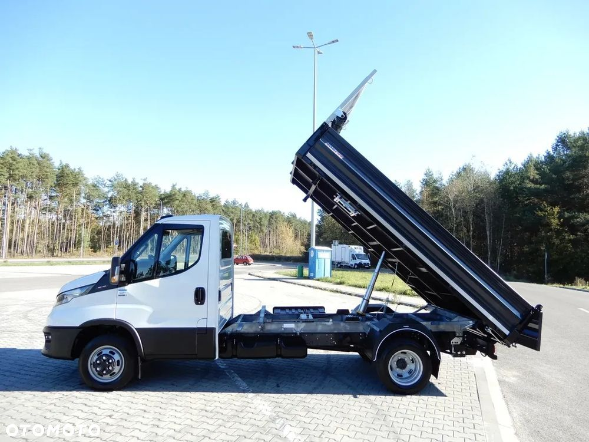

Przedmiotem Sprzedaży jest Samochód Dostawczy Marki : Iveco Daily 50C16
Wzmacniany ,najlepsza jednostka napędowa 3.0 HPI 160 KM . Wywrotka Renomowanej Firmy RomCar Wywrot Kiper x 3 Skrzynia 3.62 Cm
Na auto wystawiam fakturę 23% VAT
AUTO z polskiego salonu, bezwypadkowe, gwarancja przebiegu
Data Rejestracji 09.08.2022
Rok Produkcji: 2022
Silnik: 3.0 HPI 160 KM Na Euro 6 Rozrząd Na Łańcuchu
Możliwość Sprawdzenia Wiarygodności Stanu I Przebiegu Na Autoryzowanej Stacji IVECO
DMC 3500 kg Nie Podlega Podatku Drogowego Prawo Jazdy Kategoria B
Ładowność: 750 Kg
Liczba Miejsc : 3
Rosław Osi: 3.75 CM
Resory Tylne Wzmacniane
Stabilizator Tylnej Osi Pod Ramą
Amortyzatory Wzmocnione
Wzmocnione Resory i Amortyzatory z Przodu
Skrzynia Biegów: 6-Biegów
Koła 195/75 R 16 C , oryginalne Ogumienie 90 % Do Jazdy Bridgestone
Hak
• Centralny Zamek z Pilota
• Tempomat
• Ogranicznik Prędkości
• Światła Do Jazdy Dziennej
• Halogeny Przednie
• Doświetlanie Zakrętów
• Klimatyzacja
• Elektrycznie Podnoszone Szyby
• Elektrycznie Ustawiane Lusterka Boczne + Podgrzewane
• Radio Fabryczne
• Kierownica Wielofunkcyjna , Ze Sterowaniem Radia I Telefonu Komórkowego
• Pneumatyczny Fotel Kierowcy Regulowany w 3 Płaszczyznach Fotel Boczny Podwójny
• Półka Nad Przednią Szybą, Pakiet Schowków
Maksymalna Masa Całkowita Przyczepy Z Hamulcem To 3500 Kg
Maksymalna Masa Całkowita Przyczepy Bez Hamulca To 750 Kg
Zabudowa: Kiper 3 stronny - Producent RomCar
Zabudowa Stalowa , Wzmacniana
Rama Zabudowy Stalowa Pokryta Ocynkiem
Wymiary Wewnętrzne Przestrzeni Ładunkowej :
Długość - 3.62 cm
Szerokość - 2.05 cm
Wysokość Burty - 50 cm
Informacje Umieszczone Na Stronie Internetowej Służą Jedynie Celom Informacyjnym I Nie Stanowią Oferty W Rozumieniu art. 66 § 1 Kodeksu Cywilnego.
